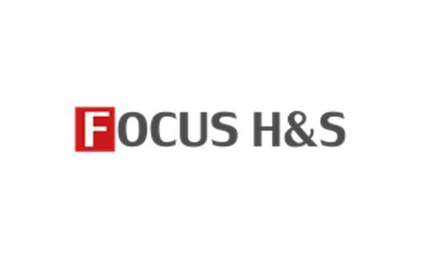

세계보안엑스포 2024
기억에 남는 회사
-
YETTIE SOFT
웹 위변조 방지 난독화 솔루션 VestWeb
VestWeb은 HTML 소스코드 난독화, 데이터 변조 방지, 안티 디버깅, E2E 우회 방지, 무설치 비대칭키/ 대칭키 암호화, 다양한 운영모드 (차단, 알림, 감사,By Pass) 등 다양한 기능들을 간단하게 사용할 수 있는 솔루션 입니다.
-
FOCUS H&S
GATE 24 service platform
차랑번호 빅데이터를 기반으로 한 주차, 출입통제, 무인정산, 키오스크, 카카오/네이버 페이 결제시스템, 비대면 감면과 연동되는 통함관제 시스템으로 고객에게 편리함과 효율성을 제공합니다.
정부 3.0프레임워크가 적용된 시스템으로 SHA256,512 암호화 및 방화벽 / IPS / Ddos / WAF 보안솔루션이 적용되어 있습니다.
-
POLARIS OFFICE

Polaris watcher
Polaris watcher는 외부에서 유입되는 문서에 포함된 잠재적인 위협을 제거하여 깨끗해진 문서를 사용자에게 전달합니다. 컨텐츠 정밀 검증을 통해 파일에 악성코드로 사용할 수 있는 보안 취약점 (악성 매크로, 스크립트, 임베디드 파일 등)을 찾고, 컨텐츠를 분해해 보안 약점을 원천 제거해 깨끗한 파일로 재구성합니다.
Polaris watcher의 특장점으로는 다양한 압축 형식 지원 및 다중 압축을 탐지할 수 있습니다. 또한 악성코드 및 문서 취약점을 처리하며 원문의 안전성 보장이 가능합니다. 실시간 백업 및 복원또한 가능합니다 (Agent용)